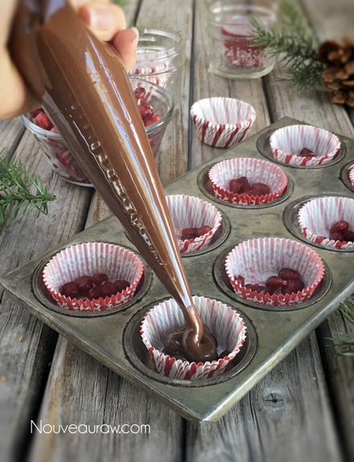
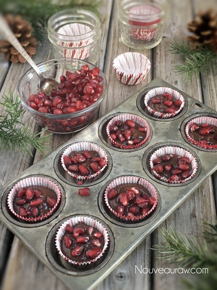

Pomegranate Chocolate Clusters

~ raw, vegan, gluten-free, nut-free ~
Does the mere mention of pomegranate and chocolate leave you breathless with anticipation? With one pomegranate and a bowl of melted chocolate, you can create a dazzling display of pomegranate chocolate clusters that are sure to make for any festive gathering just that much more memorable.
Let’s talk pomegranates…
Did you know that an average pomegranate contains about 600 juicy seeds, also known as arils, which are encapsulated in white pith? There are many different ways in which a person can remove these seeds, find one that works well for you.
The pomegranate fruit is low in calories, high in fiber, high in vitamins and high in phytochemicals that may promote heart health and help to prevent cancer. Interestingly, the juice of 100 grams of pomegranate seeds contains twice as many antioxidants as blackberries, more than three times as many as blueberries, and four times as many as oranges. I am feeling better and better about this treat
Be aware, much like out friend turmeric, the juice surrounding the seeds of pomegranate will stain – everything! It’s like an explosion of sweet deliciousness in your mouth when you crunch into them, so this is an excellent time to practice chewing with your mouth closed. hehe
This recipe doesn’t require any dehydration (unless you want to melt your chocolate that way), no overnight soaking, no blenders or food processors… how is that for simplicity? You are going to love these; I am confident about that. Many blessings, amie sue
Ingredients:
- 1/2 cup raw cacao butter, melted
- 1/2 cup raw cacao powder
- 2 Tbsp raw agave nectar or maple syrup
- Pinch Himalayan pink salt
- Pomegranate seeds
Preparation:
Dehydrator method:
- You can use a double boiler method or dehydrator method (which is what I used). I have a 9 tray Excalibur dehydrator, which allows me to remove the trays and place bowls in the cavity of it. It worked perfectly for this recipe.
- Shred about 1 cup of raw cacao butter in a 2 cup measuring cup. You can use a bowl, but this way, once melted, you can double-check your melted measurement (this saves dishes). Place the measuring cup in the dehydrator. I also place a metal bowl in there to warm the surface of the bowl.
- Once the butter is completely melted, pour the liquid into the metal bowl. Whisk the cacao powder in, making sure to work out any lumps.
- Add the sweetener while you continue to whisk, then the pinch of sea salt.
Double boiler method:
- Set up the double boiler and melt the cacao butter until it is liquid.
- Add the cacao powder, whisking during the process. Work out any lumps.
- Add sweetener, stirring well. Add the pinch of salt and stir some more.
Assembly:
- Line a cupcake pan with liners.
- Place 1 tsp of pomegranate seeds.
- Pipe the chocolate over the seeds, roughly 3/4 way full.
- Top with more pomegranate seeds and slide in the fridge to harden.
- Enjoy! These will keep at room temp (under 70 degrees (F) safely) or store in the fridge.
The Institute of Culinary Ingredients™
- Using raw agave nectar… Click (here) to read why I use it.
- What is raw cacao powder?
- What is Himalayan pink salt, and does it matter? Click (here) to read more about it.
- For tips on working with raw cacao butter, click (here).


© AmieSue.com